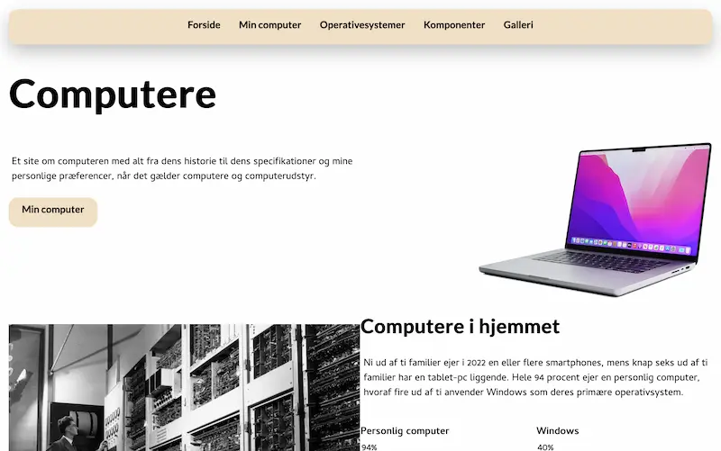

Tema 2
grundlæggende web
Formål og proces
I temaet "Grundlæggende web" var vores hovedfokus at opnå en basal
viden om HTML og CSS.
Desuden fik vi en elementær indsigt i
grafisk design. Vi blev instrueret i designkonventioner,
grundlæggende principper og Gestalt-love.

02.01.02 Website - Studiestartsprøve
Under selve processen har vi fået en god generel viden om grafisk design. Vi blev herunder undervist i blandt andet design konventioner, principper og gestalt love.